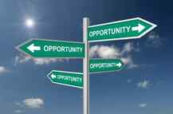

Corey is an iconoclast and the author of 'Man's Fight for Existence'. He believes that the key to life is for men to honour their primal nature. Visit his new website at primalexistence.com


As we close yet another year, it’s easy to look back and feel bad about all that’s been happening around the world and of the social realities that men are currently facing. Instead of dwelling on these negative aspects of life, I think it’s important for us to appreciate all the things that we do have and be grateful that we still have them. Gratitude is something we can all have more of and an important aspect of living life fully.
Assuming your family and friends are not completely toxic, take the time to appreciate all the times they’ve been there for you. If you don’t think much of them now, try to rekindle your relationship and find out new things about them. If you feel that they have wronged you in any way, forgive them and try to understand them. It’s important to get out of your head once in a while to put your focus on other people instead of on yourself. Our social connections are one of our prime sources of happiness and they should not be neglected.

Know how great it is that we live in an age where so much knowledge is available to so many. If you are reading this right now, it means that you have access to the internet where you can learn just about anything for free. And with a small fee, you can have access to online courses to learn useful skills instead of going in debt to go to college or university. All that knowledge is right there online and within your reach only if you have the curiosity to search for them.
Then there are the public libraries where you have access to more books than you could ever read in your lifetime. Great works of literature and books on history, philosophy, science, and so on, that are not available on the internet, are all in your local library. Take advantage of them.
Last, don’t neglect the lessons of life. You can’t learn the important life lessons just by reading about them; oftentimes, experience is the greatest teacher that you can have. Instead of living blindly, live consciously with full awareness. You can choose to view your past failures with regrets and self-pity, or as experiences to learn and grow from—the choice is yours to take.
Nick Vujicic was born without arms or legs and is living life to the fullest. What’s your excuse?
If you can read this with your eyes, if you can walk and talk and are free from a serious illness or disability, then consider yourself blessed. You don’t realize how great you have it right now until you lose your body with age or accident. You don’t realize the gift of health until you become sick and diseased. You don’t have to wait until any of those misfortunes happen; you can start to be grateful for having a healthy and functioning body right this moment.
If you ever feel like life is not fair and think you have it bad, watch the video below. You’ll realize that you have nothing to complain about.

Our world is full of endless opportunities. It’s easy to overlook just how much choice and options we have in this world when you limit yourself to what you’ve been taught and live by the way society expects you to do. The catch is, you must be willing to put yourself out of your comfort zone. Without risk, you won’t gain much. Without breaking the routine, you will not change.
Don’t like your job? Find an alternative source of income. Don’t like where you live? Leave and find a better place. Don’t like your life? Learn about yourself and the world and make the change. In spite of all the bitching about having to live in a feminist or ‘socialist’ society, the truth is that we have more opportunities than those who live in third world squalors and have more options and mobility than almost all human beings that have ever existed since the dawn of civilization.
Some of you may balk at the very idea of living a life of gratitude, thinking that gratitude is for the weak who are without passion, or that it is antithetical to striving for greatness, but I can tell you right now that none of that is true. You can be grateful for the things that you have in your life and still be ambitious and realistic without succumbing to complacency.
By appreciating what you have, you bring in greater satisfaction to your life and may even lead you to set proper priorities.
One small thing you can do to practice gratitude is to just take couple of minutes every night before you go to bed to think about something or someone you are grateful for. It’s important not just to think and remember it, but to feel it through your body as you do this. Just give it a try for few weeks and see how you feel.
It’s okay to take some moment to appreciate the simple things in life; your goals and troubles won’t go away, but you just might find more satisfaction and joy.